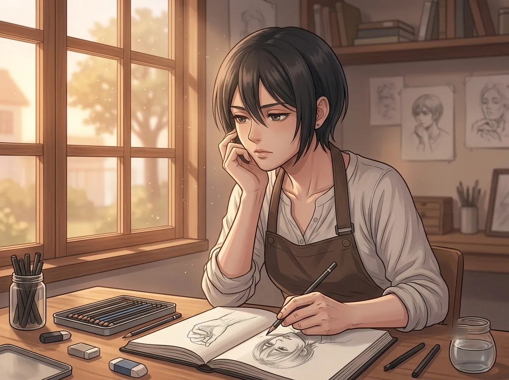
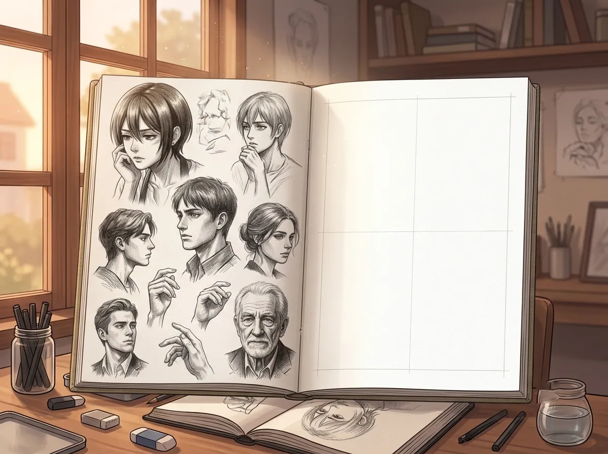
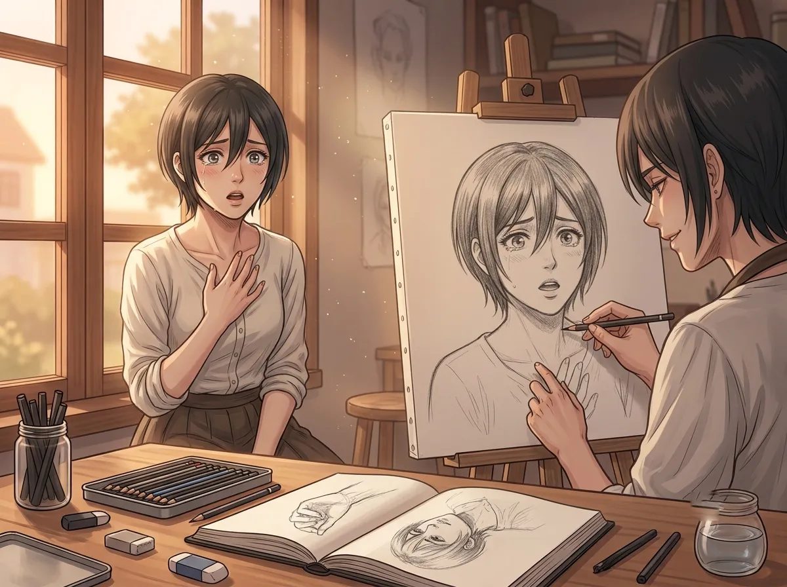
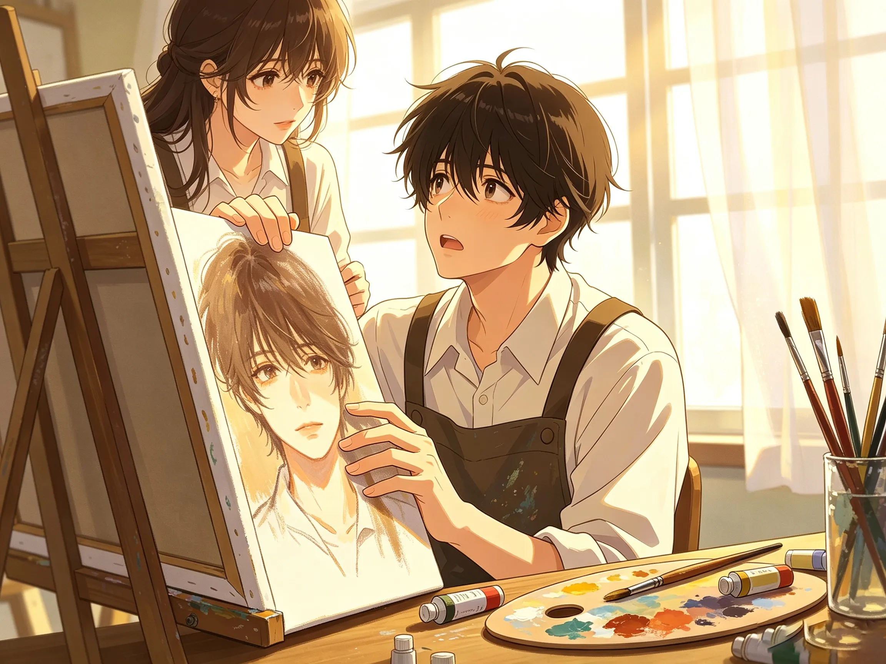

He gave strangers faces they didn't deserve. No one complained.
He sat on a street corner. Every day. With a sketchbook and a box of pencils.
He drew people. Strangers. Anyone who would sit still long enough. He drew their faces. But he never drew them the way they were. He drew them the way they could be. The way they should be.
He made everyone beautiful. Even the ones who weren't. Even the ones who didn't know they could be.
People complained. "I don't look like that." They said it every time. Then they looked at the drawing. Then they paused. Then they said "...I'll take it."
This is the story of the artist who gave everyone a face they didn't deserve. And the one person he couldn't bear to give away.

He lied with a pencil. That's what he did. He took a person's face and he changed it. Just a little. Just enough. He softened the lines. He lifted the corners of the mouth. He made the eyes a little brighter. He made the skin a little smoother.
He didn't ask permission. He didn't explain. He just did it. And when he was done, he handed the drawing to the person. He waited.
"I don't look like that," they said.
"You could," he said.
They stared at the drawing. They stared at him. They paid him. They left.
They always left. But they never threw away the drawing.
He lied with a pencil. He drew people the way they should look. The way they could look. The way they would look if they saw themselves the way he saw them.
He didn't charge much. He didn't care about money. He cared about the moment. The moment they looked at the drawing and saw someone they didn't recognize. The moment they realized they could be that person. The moment they smiled.
He lied. But it was a kind lie. The kind that made people feel like they mattered.

He drew everyone. He drew hundreds of faces. Thousands of faces. He drew the old and the young. The rich and the poor. The happy and the sad.
He never drew himself.
Not once. Not ever. His sketchbook had hundreds of pages. Every page was filled. Every page was someone else. The last page was empty. It had always been empty. He never touched it.
He didn't know why. He didn't think about it. He just never drew himself. He didn't want to see his own face on paper. He didn't want to see what he would do with it. He didn't want to see if he would lie to himself too.
He drew everyone. Every stranger who sat in front of him. Every face that asked to be seen.
He never drew himself. He didn't know why. He didn't want to know why. The last page of his sketchbook was empty. It had always been empty. It would always be empty.
He didn't want to see himself the way he saw others. He didn't want to know what he would do with his own face. He didn't want to know if he would lie to himself too.

One day, she sat down in front of him. She didn't say much. She just sat. She looked at him. He looked at her. He started drawing.
He drew her. He drew her the way he drew everyone. He made her beautiful. He made her softer. He made her eyes brighter. He made her smile a little wider.
When he finished, he handed her the drawing. She looked at it. She didn't say "I don't look like that." She didn't say anything.
She just stared. She stared at the drawing. She stared at the person she could be. She stared at the person she didn't know she was.
She looked up at him. Her eyes were wet. She didn't cry. She almost did. But she didn't.
She said, "Is this really me?"
"Is this really me?" she asked.
He didn't know how to answer. He had drawn hundreds of people. He had told hundreds of lies. He had made hundreds of strangers beautiful.
But no one had ever asked him that. No one had ever asked if the drawing was really them. They always said "I don't look like that." They never asked "Is this really me?"
He didn't know what to say. He didn't know if it was really her. He didn't know if it could be her. He only knew that he had drawn her the way he saw her. And the way he saw her was beautiful.
He finished the drawing. He looked at it. He looked at her. He looked at the drawing again.
He didn't want to give it away.
He had never felt that before. He had drawn hundreds of people. He had given away hundreds of drawings. He had never wanted to keep one.
He wanted to keep this one. He wanted to keep her face. He wanted to keep the version of her that he had drawn. He wanted to keep the person she could be.
He didn't know why. He didn't know what it meant. He didn't know what to do.
He held the drawing. He held it for too long. She looked at him. He looked at her. He said, "Here."
He gave it to her. He gave it away. He watched her take it. He watched her look at it. He watched her smile. He watched her leave.
He didn't watch her go. He couldn't. He looked down at his empty hands. He felt something he had never felt before.
He wanted to keep the drawing. He had never wanted to keep a drawing before. He had never wanted to keep anything before.
He didn't know why he wanted to keep this one. He didn't know what it meant. He didn't know what to do with the feeling.
He gave it away. He gave it away because he didn't know what else to do. He gave it away because he didn't know how to keep something.
He watched her leave. He didn't watch her go. He couldn't. He looked down at his empty hands. He felt something he had never felt before.

She came back the next day. She brought the drawing. She sat down in front of him.
"I want another one," she said.
He didn't ask why. He didn't ask what she wanted. He just started drawing.
He drew her again. He drew her the same way. He made her beautiful. He made her softer. He made her eyes brighter. He made her smile a little wider.
When he finished, he handed her the drawing. She looked at it. She looked at him.
"Thank you," she said. "For drawing me the way you see me."
She didn't leave. She stayed. She sat there. She watched him draw other people. She watched him lie with his pencil. She watched him make everyone beautiful.
He didn't know what to do. He didn't know what to say. He didn't know how to tell her that no one had ever said thank you like that. That no one had ever seen him like that. That no one had ever stayed.
She came back. She didn't just take the drawing. She stayed. She watched him. She saw him. She thanked him.
He didn't know what to do with that. He didn't know what to do with someone who stayed. He didn't know what to do with someone who thanked him for telling the truth.
He had drawn hundreds of people. He had given away hundreds of lies. No one had ever stayed. No one had ever thanked him.
She stayed. She thanked him. She made him want to draw something new. Something he had never drawn before.
He thought about the last page of his sketchbook. The empty page. He thought about drawing himself. He thought about letting her see it.
Rafayel sat on a street corner. He drew strangers. He made them beautiful. He gave them faces they didn't deserve. No one complained.
He never drew himself. The last page of his sketchbook was always empty.
Then she sat down. He drew her. He wanted to keep it. He gave it away anyway. She came back. She stayed. She thanked him.
He thought about the empty page. He thought about drawing himself. He thought about letting her see it.
He didn't know if he would. He didn't know if he could. He didn't know if he was ready to see himself the way he saw others.
But for the first time, he wanted to try.